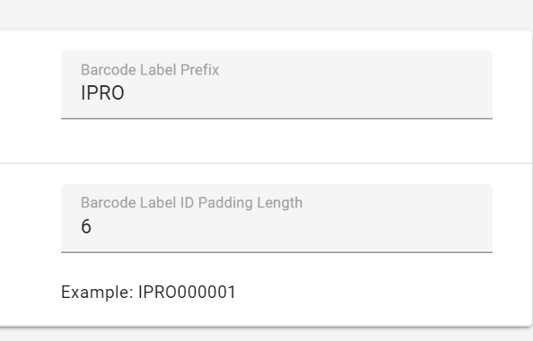

The System Manager opens. In the left pane of the System Manager, click Environment Settings.

If your organization uses standard code 128 numeric or alphanumeric barcodes for media identification (ID), the barcode format can be defined and will be used in the media definition process. Otherwise, sequential numbering beginning with 001 is used.
To define a specific barcode format for your organization:
The System Manager opens. In the left pane of the System Manager, click Environment Settings.
Enter a Barcode Label Prefix and Label ID Padding Length matching your organization’s guidelines, as shown in the following example.

|
|
Note:
|
Related Topics